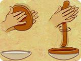

 Coiling Technique is a method of forming pottery by hand. A coil or rope of clay is wound around in successive layers and pinched together to form the walls. Baskets are also made by coiling, using plant materials.
Close